Activity: Draw and dimension a sketch
Try this activity to learn the basics of sketching:
Plane locking and repositioning the sketch plane origin
Drawing sketch elements
Placing dimensions
Applying geometric relationships and showing relationship handles
Controlling sketch display
Click here to download the activity file.
Start Solid Edge.
On the File menu, click Open.
In the Open File dialog box, set the Look in: field to the folder where the training files reside.
Click sketch_A.par and then click Open.

Choose the Line command.
Define the sketch plane. Hover over the angled sketch plane. Press the N key until the green edge highlights as shown. This defines the horizontal direction for the sketch plane.
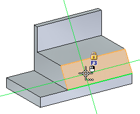
While the plane highlights, you can begin sketching and you lock to the plane. If you move the cursor away from the plane before placing any geometry, you have to highlight the plane again. You could also click the lock on the highlighted plane to lock the plane. If you manually lock the plane, it remains locked until you unlock it.
Draw a slot shaped sketch consisting of two lines and two arcs. While the angled plane highlights, click to place the first point of the line.
For the second point of the line, make sure the horizontal indicator displays and then click.
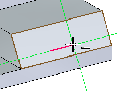
Place a tangent arc. Press the A key to enter the place arc command.
Position the intent zone as shown.
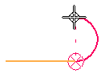
Place the arc end point vertical from arc start point.
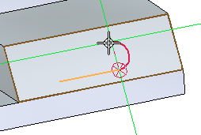
Place the second line as shown. Make sure you get the tangent alignment symbol and the vertical alignment from the first point of the start line.
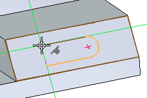
Place the second tangent arc. Press A and then end the arc at the endpoint of the first line.
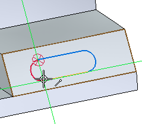
Notice the face changes to a blue color. This denotes the presence of regions. The sketch drawn on the face creates two regions.
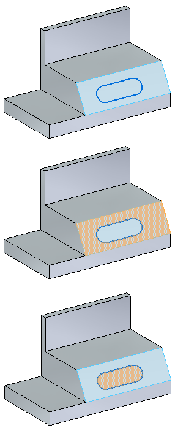
Center the slot sketch on the face using geometric relationships.
If the relationship handles are not displayed, on the Sketching tab→Relate group, choose Relationship Handles.

The handles show that the lines are horizontal and the arcs are tangent connected to the endpoints of the lines.
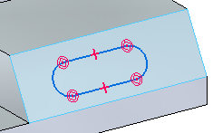
Align the midpoint of one line to the midpoint of a face edge. In the Relate group, choose the Horizontal/Vertical command. Click the midpoint of the line and then click the midpoint of the face edge.
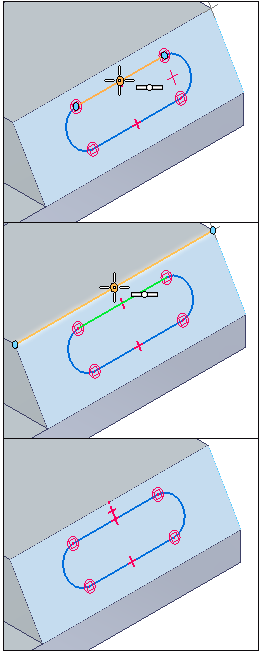
Align the center of the arc to the midpoint of a face edge. Using the Horizontal/Vertical command, click the arc center and then the midpoint of the face edge. The slot is centered on the face.
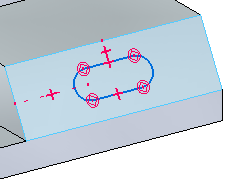
Dimension the slot radius and distance between centers.
On the Sketching tab→Dimension group, choose Smart Dimension. Click one of the arcs and type 5 in the Dimension Value Edit box.
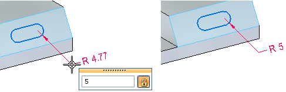
On the Sketching tab→Dimension group, choose Distance Between. Select the center of each arc and type 30 in the edit box.
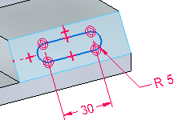
If the sketch plane was manually locked, in PathFinder, right-click the sketch. On the shortcut menu, choose Lock Sketch Plane.
Click the eye to turn off the sketch display.
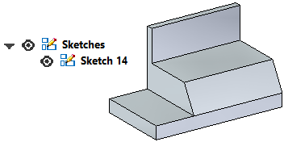
The activity is complete. Exit the file and do not save.
In this activity you learned how to create a sketch on a part face. You learned how to apply relationships and dimensions to a sketch.